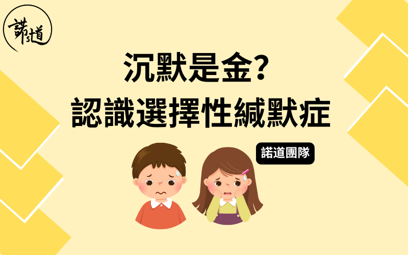

沉默是金？— 認識選擇性緘默症
撰文：諾道團隊
已更新：01-12-2024

選擇性緘默症是甚麼?
選擇性緘默症是焦慮症的其中一種。患有選擇性緘默症的孩子雖然可以正常説話，但在特定情境下(例如：學校、興趣班、公眾場合)就說不出口，影響他們的社交生活和情緒狀態。
如何診斷選擇性緘默症？
選擇性緘默症普遍由精神科專科醫生作診斷，根據《精神疾病診斷與統計⼿冊》第五版(DSM-V)，選擇性緘默症的診斷標準有五項：
- 持續地在特定社交情境無法說話，但在其他情境能正常交談
- 上述困難影響學業及社交溝通
- 障礙持續至少一個月(不包括入學的第一個月)
- 不是因為語言不通而導致無法說話 (例如剛遷移至新的⽂化環境)
- 無法說話的主因不是發展性障礙或其他精神疾病 (例如自閉症)
孩子是否只是「怕醜」？
性格較害羞的孩子在不同環境的社交表現通常大同小異，給予他們一些時間便會逐漸放鬆，慢慢融入社交環境。
相反，患有選擇性緘默症的孩子在特定環境下，即使過了一段很長的適應期(例如一個學期)，仍然處於「有口難言」的狀態，或情況只有輕微改善。另外，他們在不同環境下可謂判若兩人，在感到輕鬆自在的環境，例如在家中跟爸爸媽媽相處時是一隻「開籠雀」，但在其他情境則完全不說話。
如何幫助忠患有選擇性緘默症的孩子？
大部分選擇性緘默症個案並不會自然痊癒。不少人因以為「大大下就會講」而導致孩子錯過治療黃金期。一般來說，越早介入，治療效果越佳。
精神科醫生作診斷後，一般會透過遊戲輔導/治療、言語治療、心理輔導等介入幫助孩子。
獎勵孩子說話有用嗎？
根據我們的臨床經驗，獎勵對於患有選擇性緘默症的孩子幫助不大，有時甚至適得其反。因為他們並不是⽋缺說話動機，而是「本身渴望與人說話，只是有口說不出」；相反，獎勵有機會增加他們的壓⼒，令他們更難開口。
總結
透過溝通、理解和適當協助，就能幫助患有選擇性緘默症的孩子逐步建⽴健康心理，克服挑戰、展現潛⼒。
把這篇文章分享給身邊跟你同樣關心孩子成長的朋友，讓我們一起和孩子健康快樂地成長。
如有任何問題或需要幫忙，歡迎你跟諾道團隊聯絡，我們樂意為你提供協助！